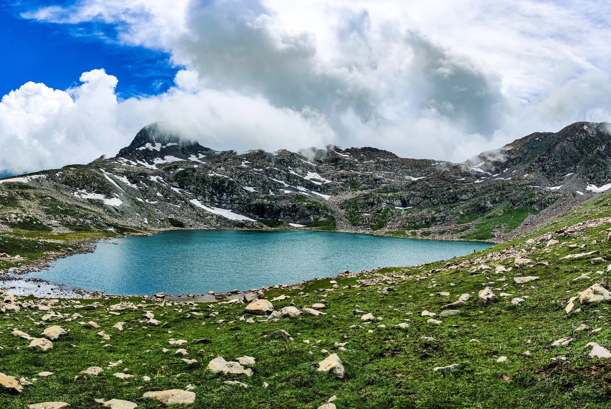
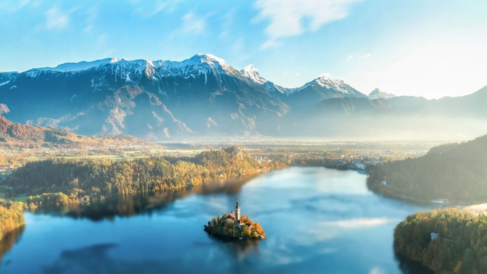
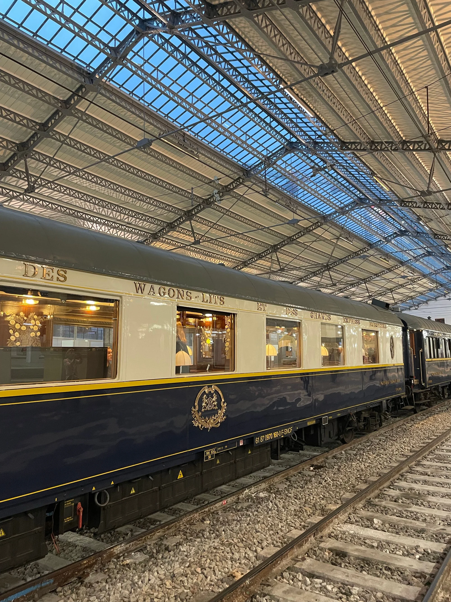
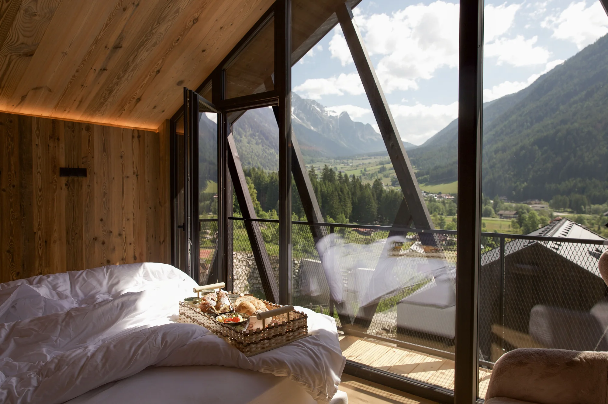
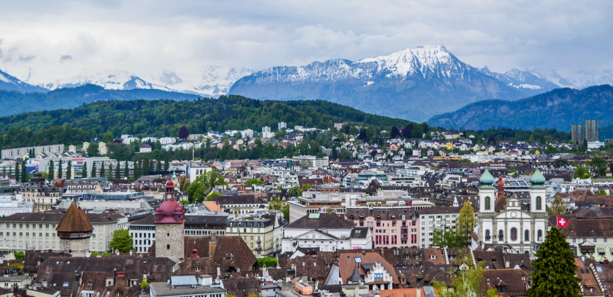
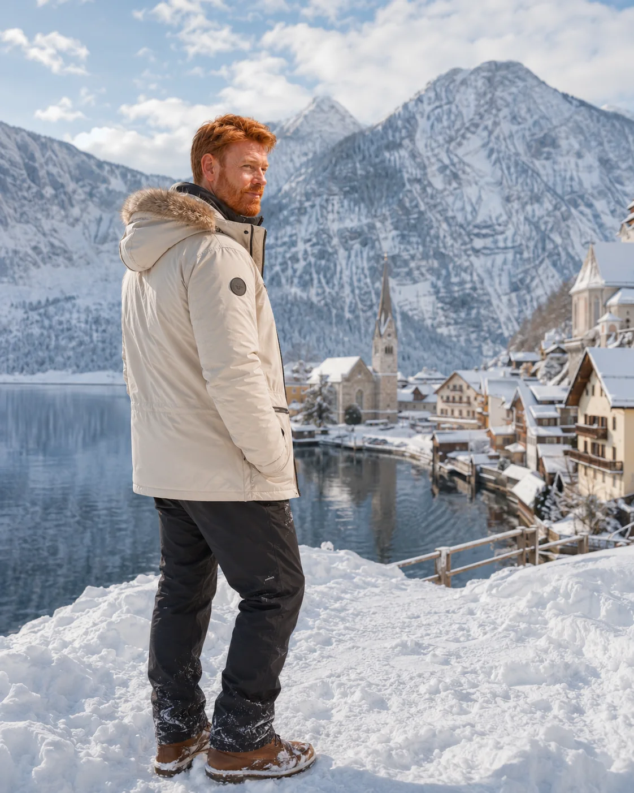

Alpine lakes and silence
Water expands the scale of the mountains and creates an experience where time is no longer just a schedule.

Fjords, mountains, lakes and landscapes that return space to time.
Landscape stops being a backdrop and begins to organise the journey.

Water expands the scale of the mountains and creates an experience where time is no longer just a schedule.

Valleys, tunnels and villages turn the transfer into one of the route’s most memorable moments.

When accommodation belongs to the setting, sunrise and night become part of the destination.

Places where landscape shapes the pace, the movement and the memory of the journey.
Monumental fjords, scenic roads and cities connected to water.
Lakes, Alpine villages and some of the continent’s most coveted trains.
Mountains, music and an elegance tied to outdoor life.
Dramatic rock walls, trails and refuges across Italian valleys.
Highlands, dark lochs and nature shaped by weather.
A region for combining scenery, rail travel and longer stays.
Natural Europe works best when the itinerary reduces the number of bases, turns movement into experience and accepts that watching the light change may be the day’s main event.
Summer opens trails and extends the days. Winter brings snow, silence and a more sensory journey.
Staying longer in fewer regions lets you follow weather, light and landscape — elements that do not obey a rigid timetable.

A landscape does not ask you to do anything. It asks only for presence.
When the itinerary slows down, travel stops being a sequence of points and becomes a complete experience again.
Editorial partnerships, destinations, tourism and content projects.